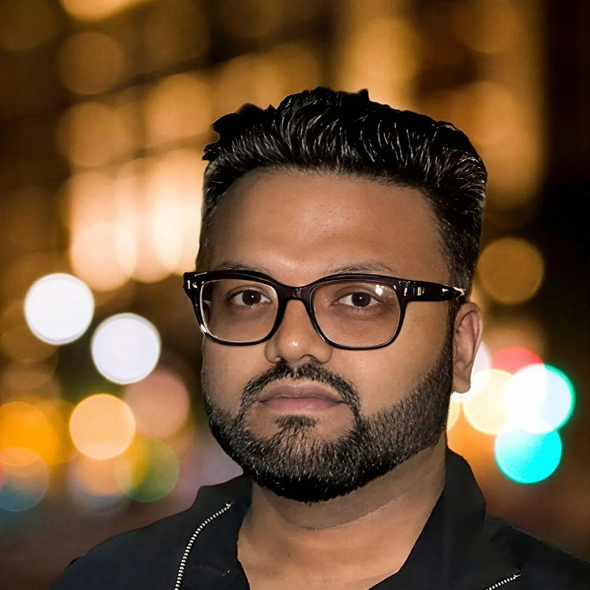
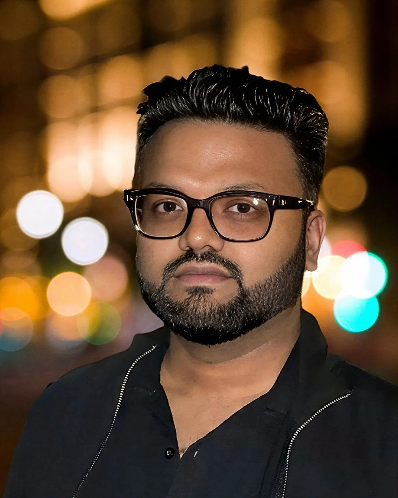
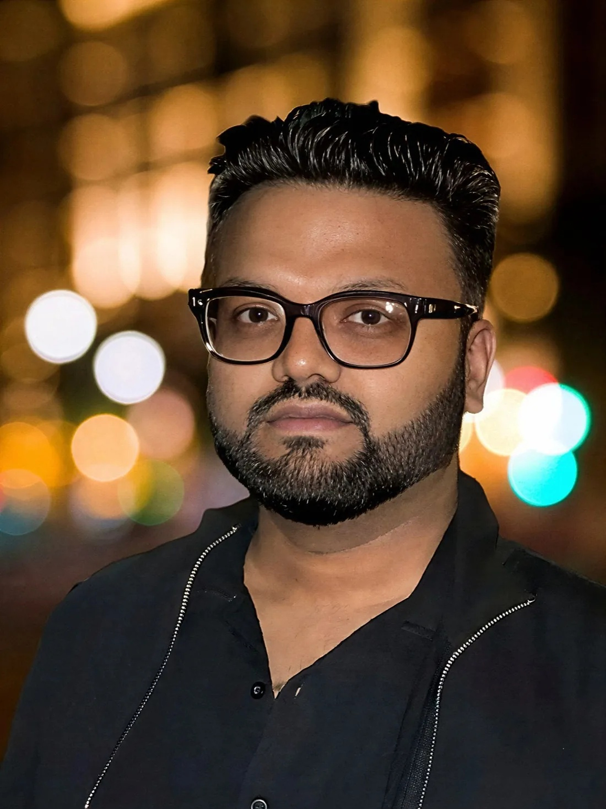
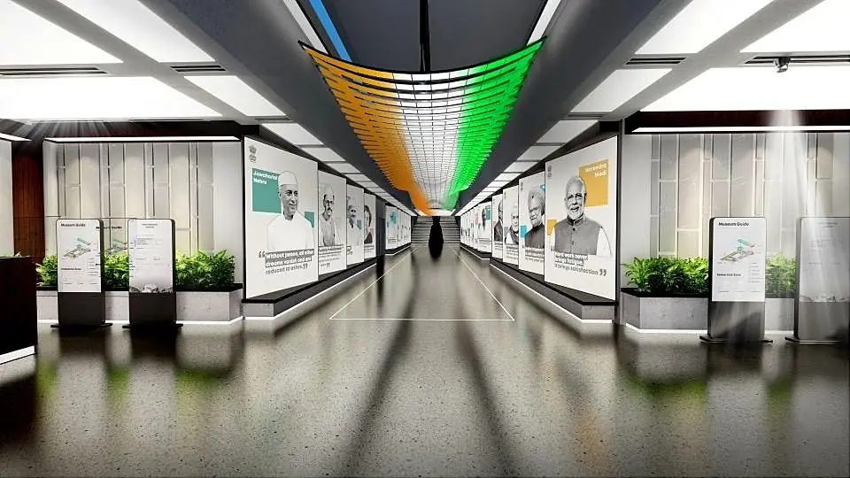
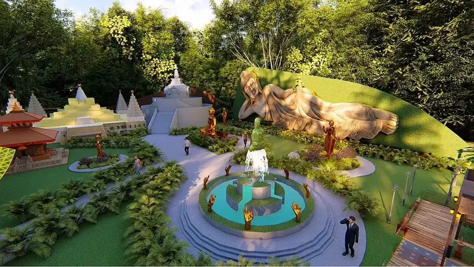
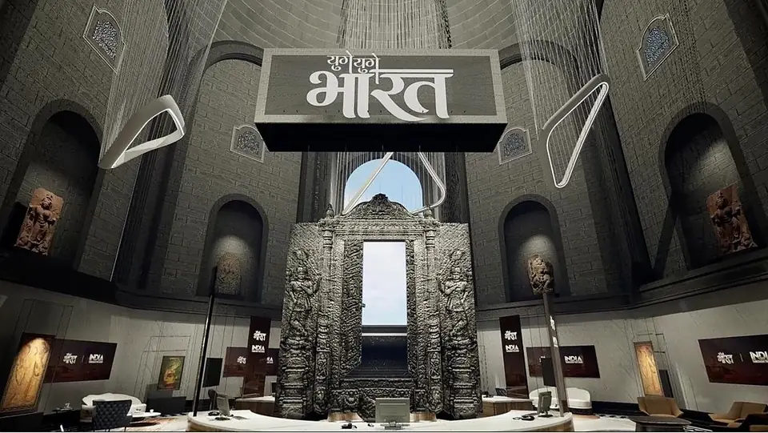
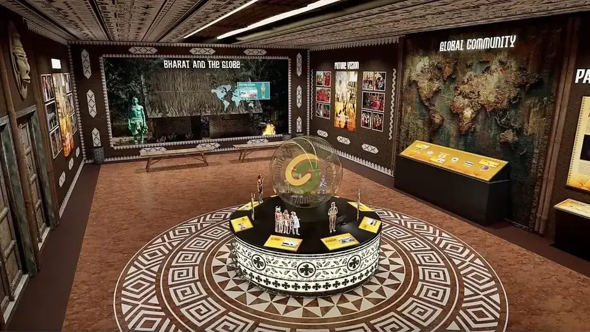
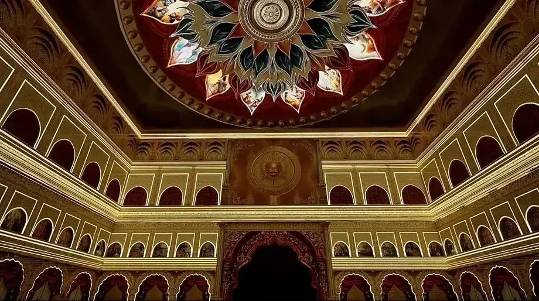
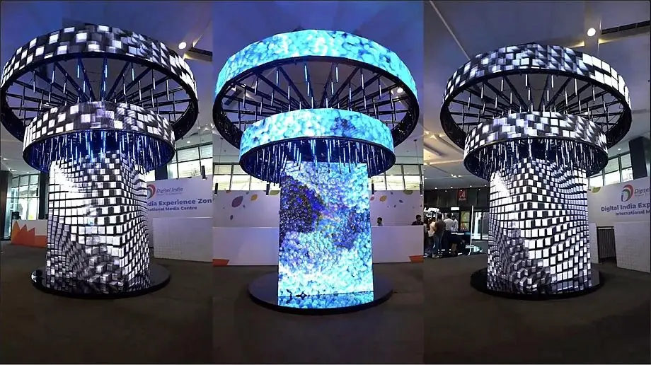

Sanzeed Mirza·New Delhi
Media kit · Sanzeed Mirza · Experiential Design Consultant · 2026
Experiential design you can walk into.
01Biographies and boilerplate
02Headshots
03Fact sheet
04Logo usage
05Projects
06Contact
Experiential design consultant. Museums, pavilions and shows you can walk into.
Sanzeed Mirza is an independent experiential design consultant in New Delhi. Fifteen years in, he leads the whole room — story, space, media and team — for institutions and brands.
Sanzeed Mirza directs museums, experience centres, pavilions, memorials and projection shows for institutions and brands. Fifteen years in — first in VFX and concept art, then eight years directing national-scale museums — he leads story, space, graphics, media and the team that builds it, so the experience is calm to run and impossible to forget.
I’m an experiential design consultant based in New Delhi, working with institutions and brands wherever the project is. Fifteen years in: first as a concept artist and VFX lead on films and animation, then eight years directing museums, experience centres, pavilions and shows.
I lead the whole room — story, space, graphics, media and the team that builds it. The work I want to make is calm to run and impossible to forget once you have walked through it.
Sanzeed Mirza is an Experiential Design Consultant based in New Delhi, working with institutions and brands wherever the project is. Over fifteen years he has directed more than 90 projects, including 60+ museums and experience centres and 15 projection-mapping and light shows, among them the Prime Minister Museum in New Delhi, the Ram Katha Show in Ayodhya and Buddha Park in Uttarakhand. He works independently with museums, cultural institutions and brands as creative lead from first concept to opening day. sanzeed.com
Brand mark and handles: SANZEED / @sanzeed. Formal, bylines, legal: Sanzeed Mirza. Descriptor, always with the full name on first use: Experiential Design Consultant. Never “Sanzeed Studio”, “Sanzeed Design” or “Mirza Design” — the brand is the person.
One portrait, supplied in three crops at 2000 px on the long side. Files are in 10_MARKETING_COLLATERAL/Press.



Use as supplied. Do not flip, tint, add filters or crop tighter than the 1:1 version. Caption as “Sanzeed Mirza, Experiential Design Consultant”. The source portrait is 1100 × 1574 px; the 2000 px files are upsampled for layout convenience — for print larger than A5, request the original from sanzeed@gmail.com.
Everything below is taken from sanzeed.com. Nothing here is estimated.
| Name | Sanzeed Mirza |
| Title | Experiential Design Consultant |
| Based in | New Delhi, India — working with institutions and brands wherever the project is |
| Practice | Independent since August 2026 |
| Experience | 15+ years; 8+ years in experiential and museum design |
| Projects directed | 90+ |
| Museums and experience centres | 60+ |
| Portfolio by category | Museums & Experience Centres 60 · Projection Mapping & Shows 15 · Explainer Videos & Others 15 |
| Selected projects | Prime Minister Museum (New Delhi) · Ram Katha Show (Ayodhya) · Buddha Park (Uttarakhand) · Yuge Yugeen Bharat Museum (New Delhi) · India Pavilion Expo 2025 (concept) · G20 Tree Show (New Delhi) · Tribal Museum (New Delhi) · RBI Museum (Mumbai) · Army Museum Abu Dhabi · Dubai Police Control Center |
| Published case studies | Prime Minister Museum · Ram Katha Show · Buddha Park (sanzeed.com/work) |
| Services | Experiential Design & Creative Direction · Museum & Cultural Exhibition Planning · Immersive Storytelling & Narrative Architecture · Spatial Experience & Environmental Branding · Event Production & Brand Activation · Digital ↔ Physical Experience Integration · Cross-Functional Leadership & Mentorship |
| Method | 01 Discover → 02 Direct → 03 Craft → 04 Deliver |
| Career | Experiential Design Consultant, Independent (Aug 2026 – present) · Creative Director, Tagbin (Jun 2018 – Jul 2026) · Creative Head, Digital Web Solutions (Apr – May 2018) · Creative Director, SocioPixels (Feb 2017 – Mar 2018) · Lead Concept Artist, Broadcast2world and VFX Artist, Prime Focus (Sep 2011 – Dec 2016) |
| Trusted by | PwC, Microsoft, Discovery and National Museums, from concept to public unveiling |
| Master line | Experiential design you can walk into. |
| Contact | sanzeed@gmail.com · +91 7827051270 (call / WhatsApp) · sanzeed.com · linkedin.com/in/sanzeed |
| Rights note | Employee work for Tagbin, Sociopixel, DWS and B2W; rights remain with those companies. |
Full logo files, colour versions and formats are in 02_LOGO_SYSTEM. This page is the summary for editors and partners.








Employee work for Tagbin, Sociopixel, DWS and B2W; rights remain with those companies. Images may be used for editorial coverage of Sanzeed Mirza’s work with a wall label (title · place).
A few lines are enough. I reply within two working days.